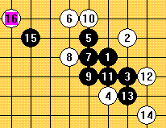

大话西游之五子棋篇
#1 大话西游之五子棋篇 作者：连珠战神 发表时间：2007-7-29 20:18:55
话说,有志老妖邀请西游组合到五子棋山PK表演。有志老妖经常率领小妖到处交流妖德，深得女妖们的欢心，西游组合深之有志老妖不拿下誓不为妖的抱负，也做了周密的计划。有志老妖花月定局想吃下，料想西游组合不敢应战，不料交换后,有志老妖企图模仿走出4手,5手后颇于H10与135猪哥的"笆手"只能落与J6,7手是沙哥的"铲手",11手时F9的反及J9的双杀，有志老妖自然不会中招，唐哥13手一样F7反加上I5后的双冲四三，孙哥的15手有志老妖以为16双防的,料不到13手时唐哥已经设伏.....15手真"三打白骨"啊!!!

情节虚构，请勿深究
此局是我在学习《五子棋必读》后自己演示的，起初13手没有怎么想就走的，15手本来以为是一子双杀胜定的，可是最进才发现共防后VCF杀，原来15是一子三杀，特别是回味13手妙不可言（“投入”和“紧逼”是桥牌的打法，我觉的五子棋中也可以采用，当然还有伏招的全局胜法）请大家仔细品位~~
#2 Re:大话西游之五子棋篇 作者：黄药师 发表时间：2007-7-29 20:37:08
有志老妖～～～！！！！